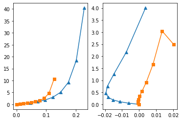

Shear experiment¶
Attempt to reproduce Figure 8 in [1].
[1] Holzapfel, Gerhard A., and Ray W. Ogden. “Constitutive modelling of passive myocardium: a structurally based framework for material characterization. “Philosophical Transactions of the Royal Society of London A: Mathematical, Physical and Engineering Sciences 367.1902 (2009): 3445-3475.
[1]:
import matplotlib.pyplot as plt
import numpy as np
import dolfin
import pulse
[2]:
try:
from dolfin_adjoint import (
Constant,
DirichletBC,
Expression,
Mesh,
UnitCubeMesh,
interpolate,
)
except ImportError:
from dolfin import (
Constant,
DirichletBC,
Mesh,
interpolate,
Expression,
UnitCubeMesh,
)
[3]:
# Create mesh
N = 2
mesh = UnitCubeMesh(N, N, N)
[4]:
# Create a facet fuction in order to mark the subdomains
ffun = dolfin.MeshFunction("size_t", mesh, 2)
ffun.set_all(0)
[5]:
# Mark subdomains
xlow = dolfin.CompiledSubDomain("near(x[0], 0) && on_boundary")
xlow_marker = 1
xlow.mark(ffun, xlow_marker)
[6]:
xhigh = dolfin.CompiledSubDomain("near(x[0], 1.0) && on_boundary")
xhigh_marker = 2
xhigh.mark(ffun, xhigh_marker)
[7]:
ylow = dolfin.CompiledSubDomain("near(x[0], 0) && on_boundary")
ylow_marker = 3
ylow.mark(ffun, ylow_marker)
[8]:
yhigh = dolfin.CompiledSubDomain("near(x[1], 1) && on_boundary")
yhigh_marker = 4
yhigh.mark(ffun, yhigh_marker)
[12]:
# Collect the functions containing the markers
marker_functions = pulse.MarkerFunctions(ffun=ffun)
[13]:
# Create mictrotructure
V_f = pulse.QuadratureSpace(mesh, 4)
[14]:
# Fibers
f0 = interpolate(Expression(("1.0", "0.0", "0.0"), degree=1), V_f)
# Sheets
s0 = interpolate(Expression(("0.0", "1.0", "0.0"), degree=1), V_f)
# Fiber-sheet normal
n0 = interpolate(Expression(("0.0", "0.0", "1.0"), degree=1), V_f)
[15]:
# Collect the mictrotructure
microstructure = pulse.Microstructure(f0=f0, s0=s0, n0=n0)
[16]:
# Create the geometry
geometry = pulse.Geometry(
mesh=mesh,
marker_functions=marker_functions,
microstructure=microstructure,
)
[17]:
# Use the default material parameters
material_parameters = {"a": 2.28, "b": 9.726, "a_f": 1.685, "b_f": 15.779}
[18]:
# Create material
material = pulse.HolzapfelOgden(parameters=material_parameters)
[19]:
# Eff / Ess strain ratio
strain_ratio = Constant(1.0)
[20]:
# Create costants defined for the dirichlet BC
u0 = Constant(0.0)
x_strain = u0 * strain_ratio / 2
y_strain = u0 * (1 / strain_ratio) / 2
[21]:
# Make Dirichlet boundary conditions
def dirichlet_bc(W):
V = W if W.sub(0).num_sub_spaces() == 0 else W.sub(0)
return [
DirichletBC(V.sub(0), Constant(-x_strain), xlow),
DirichletBC(V.sub(0), Constant(x_strain), xhigh),
DirichletBC(V.sub(1), Constant(-y_strain), ylow),
DirichletBC(V.sub(1), Constant(y_strain), yhigh),
]
[22]:
# Collect Boundary Conditions
bcs = pulse.BoundaryConditions(dirichlet=(dirichlet_bc,))
[23]:
# Create problem
problem = pulse.MechanicsProblem(geometry, material, bcs)
[24]:
# Solve problem
fig, ax = plt.subplots(1, 2)
u0s = [0.045, 0.6, 0.8]
markers = ["^", "s", "o"]
for i, sr in enumerate([2.05, 1.02, 0.48]):
strain_ratio.assign(sr)
Effs = []
Sffs = []
Esss = []
Ssss = []
for xi in np.linspace(0, 0.1, 10):
pulse.iterate.iterate(problem, u0, Constant(xi), reinit_each_step=True)
S = problem.SecondPiolaStress()
E = problem.GreenLagrangeStrain()
Sff = dolfin.assemble(dolfin.inner(f0, S * f0) * dolfin.dx)
Eff = dolfin.assemble(dolfin.inner(f0, E * f0) * dolfin.dx)
Effs.append(Eff)
Sffs.append(Sff)
Sss = dolfin.assemble(dolfin.inner(s0, S * s0) * dolfin.dx)
Ess = dolfin.assemble(dolfin.inner(s0, E * s0) * dolfin.dx)
Esss.append(Ess)
Ssss.append(Sss)
ax[0].plot(Effs, Sffs, marker=markers[i], label=f"SR: {sr:.2f}")
ax[1].plot(Esss, Ssss, marker=markers[i], label=f"SR: {sr:.2f}")
ax[0].set_ylabel("$S_{ff}$ (kPa)")
ax[1].set_ylabel("$S_{ss}$ (kPa)")
2021-05-11 20:33:40,185 - pulse.iterate - INFO - Iterating....
2021-05-11 20:33:40,186 - pulse.iterate - INFO - Current control: 0.000
2021-05-11 20:33:40,187 - pulse.iterate - INFO - Target: 0.000
2021-05-11 20:33:40,240 - pulse.iterate - INFO - Iterating....
2021-05-11 20:33:40,241 - pulse.iterate - INFO - Current control: 0.000
2021-05-11 20:33:40,241 - pulse.iterate - INFO - Target: 0.011
2021-05-11 20:34:17,588 - pulse.iterate - INFO - Iterating....
2021-05-11 20:34:17,589 - pulse.iterate - INFO - Current control: 0.011
2021-05-11 20:34:17,589 - pulse.iterate - INFO - Target: 0.022
2021-05-11 20:34:18,785 - pulse.iterate - INFO - Iterating....
2021-05-11 20:34:18,785 - pulse.iterate - INFO - Current control: 0.022
2021-05-11 20:34:18,786 - pulse.iterate - INFO - Target: 0.033
2021-05-11 20:34:19,095 - pulse.iterate - INFO - Iterating....
2021-05-11 20:34:19,096 - pulse.iterate - INFO - Current control: 0.033
2021-05-11 20:34:19,097 - pulse.iterate - INFO - Target: 0.044
2021-05-11 20:34:20,377 - pulse.iterate - INFO - Iterating....
2021-05-11 20:34:20,377 - pulse.iterate - INFO - Current control: 0.044
2021-05-11 20:34:20,378 - pulse.iterate - INFO - Target: 0.056
2021-05-11 20:34:21,667 - pulse.iterate - INFO - Iterating....
2021-05-11 20:34:21,667 - pulse.iterate - INFO - Current control: 0.056
2021-05-11 20:34:21,668 - pulse.iterate - INFO - Target: 0.067
2021-05-11 20:34:21,972 - pulse.iterate - INFO - Iterating....
2021-05-11 20:34:21,973 - pulse.iterate - INFO - Current control: 0.067
2021-05-11 20:34:21,973 - pulse.iterate - INFO - Target: 0.078
2021-05-11 20:34:22,308 - pulse.iterate - INFO - Iterating....
2021-05-11 20:34:22,309 - pulse.iterate - INFO - Current control: 0.078
2021-05-11 20:34:22,309 - pulse.iterate - INFO - Target: 0.089
2021-05-11 20:34:22,642 - pulse.iterate - INFO - Iterating....
2021-05-11 20:34:22,643 - pulse.iterate - INFO - Current control: 0.089
2021-05-11 20:34:22,643 - pulse.iterate - INFO - Target: 0.100
2021-05-11 20:34:22,985 - pulse.iterate - INFO - Iterating....
2021-05-11 20:34:22,985 - pulse.iterate - INFO - Current control: 0.100
2021-05-11 20:34:22,986 - pulse.iterate - INFO - Target: 0.000
2021-05-11 20:34:34,000 - pulse.iterate - INFO - Iterating....
2021-05-11 20:34:34,001 - pulse.iterate - INFO - Current control: 0.000
2021-05-11 20:34:34,002 - pulse.iterate - INFO - Target: 0.011
2021-05-11 20:34:34,360 - pulse.iterate - INFO - Iterating....
2021-05-11 20:34:34,361 - pulse.iterate - INFO - Current control: 0.011
2021-05-11 20:34:34,361 - pulse.iterate - INFO - Target: 0.022
2021-05-11 20:34:34,764 - pulse.iterate - INFO - Iterating....
2021-05-11 20:34:34,765 - pulse.iterate - INFO - Current control: 0.022
2021-05-11 20:34:34,766 - pulse.iterate - INFO - Target: 0.033
2021-05-11 20:34:36,266 - pulse.iterate - INFO - Iterating....
2021-05-11 20:34:36,267 - pulse.iterate - INFO - Current control: 0.033
2021-05-11 20:34:36,268 - pulse.iterate - INFO - Target: 0.044
2021-05-11 20:34:36,670 - pulse.iterate - INFO - Iterating....
2021-05-11 20:34:36,671 - pulse.iterate - INFO - Current control: 0.044
2021-05-11 20:34:36,672 - pulse.iterate - INFO - Target: 0.056
2021-05-11 20:34:38,401 - pulse.iterate - INFO - Iterating....
2021-05-11 20:34:38,402 - pulse.iterate - INFO - Current control: 0.056
2021-05-11 20:34:38,403 - pulse.iterate - INFO - Target: 0.067
2021-05-11 20:34:38,811 - pulse.iterate - INFO - Iterating....
2021-05-11 20:34:38,812 - pulse.iterate - INFO - Current control: 0.067
2021-05-11 20:34:38,812 - pulse.iterate - INFO - Target: 0.078
2021-05-11 20:34:39,227 - pulse.iterate - INFO - Iterating....
2021-05-11 20:34:39,228 - pulse.iterate - INFO - Current control: 0.078
2021-05-11 20:34:39,228 - pulse.iterate - INFO - Target: 0.089
2021-05-11 20:34:39,645 - pulse.iterate - INFO - Iterating....
2021-05-11 20:34:39,646 - pulse.iterate - INFO - Current control: 0.089
2021-05-11 20:34:39,646 - pulse.iterate - INFO - Target: 0.100
2021-05-11 20:34:40,086 - pulse.iterate - INFO - Iterating....
2021-05-11 20:34:40,086 - pulse.iterate - INFO - Current control: 0.100
2021-05-11 20:34:40,087 - pulse.iterate - INFO - Target: 0.000
--------------------------------------------------------------------
SolverDidNotConverge Traceback (most recent call last)
<ipython-input-24-66b06ae58ab6> in <module>
10 Ssss = []
11 for xi in np.linspace(0, 0.1, 10):
---> 12 pulse.iterate.iterate(problem, u0, Constant(xi), reinit_each_step=True)
13 S = problem.SecondPiolaStress()
14 E = problem.GreenLagrangeStrain()
~/local/src/pulse/pulse/iterate.py in iterate(problem, control, target, continuation, max_adapt_iter, adapt_step, old_states, old_controls, max_nr_crash, max_iters, initial_number_of_steps, reinit_each_step)
326 reinit_each_step=reinit_each_step,
327 ) as iterator:
--> 328 res = iterator.solve()
329
330 return res
~/local/src/pulse/pulse/iterate.py in solve(self)
422 self.assign_control(enlist(self.control_values[0]))
423
--> 424 raise SolverDidNotConverge
425
426 prev_state = self.prev_states[-1]
SolverDidNotConverge:

[ ]:
ax[0].set_xlabel("$E_{ff}$")
ax[1].set_xlabel("$E_{ss}$")
for axi in ax:
axi.legend()
fig.savefig("biaxial_test")
[ ]:
[ ]: